When Students Fail to Learn from Teachers: Learning Dynamics of On-Policy Distillation
明尼苏达大学的 Xinnan Zhang 等人从词表概率、共享参数梯度和后续轨迹三层解释在策略蒸馏为何会失效。合作单位包括俄亥俄州立大学、Amazon 和弗吉尼亚理工大学。v1 于北京时间 2026 年 11 月 20 日提交，见于 11 月 23 日 arXiv 公告。本次阅读依据论文原文及作者公开工件入口，作者实验未独立复跑。论文 · 作者仓库
即使教师能力较强，学生在自己生成的前缀上接受逐 token 指导时，仍可能出现响应过长、反复生成和能力下降。学生在这些前缀上与教师的局部高概率选项重合度很高，却无法形成正确的完整轨迹。
1. 背景和问题
1.1 学习分布由当前学生决定
离线轨迹蒸馏先把教师的完整答案拿出来，让学生沿这些答案学习下一步，因此训练前缀大多来自教师。学生真正推理时却会走到自己犯错的状态，在教师生成的正确前缀上掌握下一步并不一定足以处理这个偏移。在策略蒸馏把学生推理时的状态分布带进训练，让学生先产生一批轨迹，再由固定教师读相同前缀，逐位置返回对后续 token 的偏好。这使短答案或稀疏最终奖励之外有了密集指导，但也把学生当前最常经过的路线、学生能采出的下一步及教师对这些前缀是否胜任同时耦合进训练。
三类反馈在这个任务下对应不同成本。逐状态返回完整词表分布能观察教师和学生对所有 token 的意见；按 top-K 截断能保留部分教师或学生高分选项；只返回学生抽中的 token 的教师概率能大幅降低目标传输与记录开销。后一种节省来源于是否需要交换词表概率，不能把它解释成教师不用前向计算。更重要的是，观察一个抽中 token 时，训练已决定没有直接看到教师最看好但学生极少产生的选择。若两者概率对同一个 token 都小或恰巧相同，这一个动作不足以揭示两份分布在其他位置分歧很大。即便优势很负，它也直接惩罚当前学生的选择，而没有指定概率应该移到哪个备选项。正常语言状态中有很多可相互替代的表达，这未必危险；如果某一步控制完成、工具结束或有效输出格式，缺了那一个替代项就可能改变整段轨迹。
还要连着看训练状态与评估状态。训练曲线平均的是每个检查点重新生成的一批前缀，学生会换着去不同的地方。例如开始时还有一批短答和一批长答，后来短答的终止位置持续受到压制，训练指标分母会向长轨迹倾斜。即便共识分数在这个分母上上升，也可能主要因为模型逐渐进入教师同样容易重复的区域。固定同一组前缀反复出分能测分布对齐程度，不能告诉读者这些前缀在真实 rollout 中还会被访问几次。本文把条件对齐与端到端表现并列，终止案例正好把两个测量口径之间的差异呈现出来。
1.2 伪一致从哪里出现
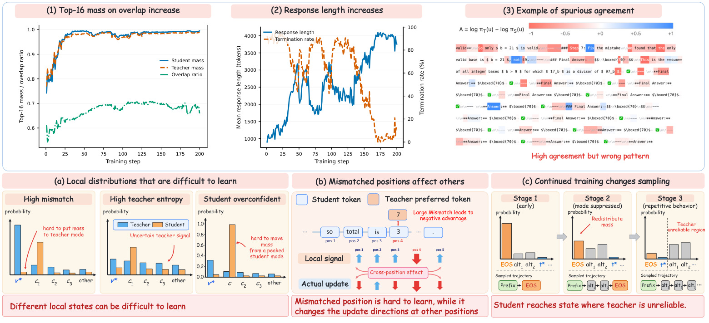
Figure 1 上排先展示 on-policy 序列上教师与学生高分 token 的统计：左图随训练步数，高分集合交集中的学生和教师质量保持在较高位置，集合交集比例也有自己的尺度。中央的响应长度与终止率采用两根纵轴，后期长响应增多而终止率跌落。右图把一条生成中的样本 token 与逐位置优势标在一起，蓝红格子透露某些位置的相近或差异，但高 agreement 的展示仍伴随文字循环。三者合起来说明，给当前前缀的共识和能否走出相应前缀是不同层面的指标，不能凭重合走势下最终判断。下排左图分别画出教师尖峰没被学生覆盖、教师熵高和学生过自信的示例。中间的箭头从单位置预期方向转向共享参数后的实际作用。右图按训练阶段展示学生先削弱原选择，再沿概率重新分配后的备选路线延伸，最终走向教师也容易重复的前缀。这里的分面是三个机制的联系示意。它既不表示每一条长答案都会循环，也没有用一个曲线证明局部干预的因果。后文专门用对齐终止 token 与遮罩梯度两组干预为其中一条路径增加证据。
伪一致的难点在于它不会总表现为失配均值上升。典型仪表可以看到高覆盖、可观的训练样本吞吐和每步监督位置数，但如果终止发生在少数关键状态，这类位置的错误会被大量流畅 token 冲淡。反过来，模型回答较短也不代表有能力完成题目。如果响应变短是提前停掉所致，任务正确率仍会下降，且训练时采用的最大长度和评估终止规则也在改变这些计数。论文在具体 EOS 实验中保留重叠、截断和验证响应长度几个口径，摘要中的词语应按这套观测解释，不应扩大成所有教师与学生之间的共同因果模型。
一条可检验的机制需要跨三步建立证据。先在固定 softmax 状态上问单样本梯度能否把概率质量给到真正需要的位置，然后在实际共享参数模型中验证本地梯度与批量梯度是否还同向。最后重新产生 rollout，检测更新后的学生究竟进入了哪些原先少见的前缀。前两步即使充分也只说明短步方向和训练时的合成影响。第三步需要教师在学生前缀上实际续写，以区分学生单方面出错与教师在这一批输入上也给不出有效纠错。作者没有把后者用教师原始测试集的平均准确率代替。
从多轮语言模型系统看，特别值得区分三种外观相似的失败。学生根本无法采到某个教师偏好的 token，是该动作的学习覆盖问题。学生在同一前缀能采到它，但参数更新混进许多异质位置后无力提高其概率，是梯度干扰问题。学生之后大多走进另一个前缀，而教师在那里也容易沿坏路线继续，则是采样轨迹变化。它们分别需要看教师支持集合的学生质量、同批位置梯度或更新后-更新前的分数变化、以及实际轨迹的状态构成。修复第一个问题却不观测第三个，可能会把循环缩短但仍损失原有答案多样性。这也是论文代码和数学主表分别保留两种八采样指标的原因。
应用到推荐候选生成时，学生未必使用自然语言词表，动作也可以是同一语义 ID 空间中的分支。举例来说，一个罕见商家组前缀之后，教师可能强烈偏好合法终止或某个精确子码，而学生早期只有若干热门分支。只惩罚错分支会把学生推向相邻热门选择，若合法校验或匹配能力没有随之学到，在线召回依然出错。这是同构假设，本文没有生产推荐数据。要检验它，需先约定动作空间、老师和学生的终止标记以及候选合法规则都一致，再用同一请求批次同时观察 top-K 命中、候选覆盖、有效序列和过早结束。直接拿论文数学分数作为业务增量没有证据。
2. 方法
2.1 学生采样目标与单状态概率质量
作者用自回归分解把完整轨迹目标改写成学生访问状态上的逐位置散度，再区别实际使用的单样本更新。正反方向的分母不同：反向从学生选项出发看教师赋予的概率，正向按教师选项的质量来惩罚学生漏掉教师意见。序列级反向 KL 与训练时常用的即时项放在一起才看得出近似发生在哪里。
符号解释：$D_x$ 是提示分布，$y$ 是学生采到的序列，$T$ 为该轨迹长度，$s_t=(x,y_{\lt t})$ 包含当前已见前缀，$\pi_\theta$ 和 $\pi_T$ 分别是带参数的学生和固定教师，$A_t$ 是教师减学生的样本对数概率，$g_{\mathrm{sample}}$ 为供优化器使用的损失梯度估计。式一中的序列目标对学生访问状态分布本身也有依赖，式二只用当前位置优势，没有把后续时刻的 reward-to-go 回传到当前采样动作。在期望意义上可以把使用的前缀分布视作当前阶段给定。读者若将上两式当作无偏的同一条求导，便无法区分局部更新的弱点和轨迹抽样的反馈。
固定状态后，给每个动作一个可独立更新的 logit，以小步长 SGD 更新。作者将一次采样造成的变化拆为取样优势、已有概率和 softmax 内部耦合三个量。
符号解释：$\mathcal V$ 为共享动作词表，$z_b$ 是固定状态的学生 logit，$q_b$ 是当前学生给 token $b$ 的质量，$u\sim q$ 是实际采样，$c$ 是要观察的任意 token，$B$ 是两个 softmax 对数概率梯度的内积，$\eta$ 是小步长，$O(\eta^2)$ 是高阶余项。$\mathbf 1$ 表示条件满足取一。对数概率变得明显时，绝对概率质量也可能几乎没动，因为最后一行还乘着原坐标质量。训练要扩大以后真正产生该动作的概率，因而日志中的对数变化还要与当前概率和样本覆盖配对读取。
对被选中的 token，自项恒非负，小步的符号随优势。未被选中的其他 token 通过归一化交换质量，分水岭取决于学生已有分布，不直接看该坐标的教师偏好。
符号解释：$\tau$ 是未采样坐标换向的学生分水岭，$q_u$ 为采样动作概率，极限度量小步长下单位步长的绝对质量变化。被采样 token 接近概率边界时，对应几何因子本身变小，因此大优势的绝对修正也可能有限。未采样坐标如果在分水岭两侧，可能出现相反的调整。若教师恰好把质量放在趋近于零的学生动作上，学生既难选中它，选不中时又缺少定向提高其 logit 的正向教师项。论文附录对全词表反向 KL 的期望更新也观察到学生质量作为缩放因子。全词表计算与单样本统计的方差不同，能计算全词表仍不自动消除反向权重的问题。
2.2 失配检测与共享位置梯度
将诊断放到模型训练时，作者先固定一组由教师生成的留出前缀，分别用初始和经过若干步 OPD 的学生给分。这样的观察不会跟着学生轨迹换状态。对一个状态先计算完整正向散度的前后差，再用教师支持集合上的学生质量来解释哪些分组更容易恶化。教师熵、学生熵和分布集合覆盖可以同时变化，论文以初始散度的最高、最低四分位分开看，避免让易状态和差状态的平均彼此抵消。
符号解释：$S_p(s)$ 是按教师概率由大到小累加到阈值 $p$ 的最小支持，$S_K(s)$ 只取教师前 $K$ 项。$M_p$ 与 $M_K$ 都用学生概率求和，所以教师的集合覆盖阈值即使是零点九，也不能把学生覆盖数预设成零点九。$\Delta\mathrm{FKL}$ 取训练后减初始，负号才代表分布在这个前缀上变得更近。前者随教师分布的集中程度调节集合宽度，后者固定给定数量。对教师非常尖锐的状态，取固定宽度容易把低概率尾巴也计到覆盖中，掩盖教师首选在学生上的缺口。
真实模型 logit 由共享参数生成，局部公式的方向应与实际批量更新测量区分。若并行处理许多位置，某个失配严重的发送位置会与被观察位置产生投影，影响从正负号到概率大小。作者用一次 SGD 的小步近似计算这一影响。
符号解释：$h_i$ 是位置 $i$ 已采样动作的对数概率对共享权重的梯度，$A_j$ 是发送位置 $j$ 的教师即时优势，$M_{ij}$ 度量该发送位置对接收位置 $i$ 的一阶影响，$i=j$ 是自项。即使 $i$ 的自项指向教师偏好的方向，余项可以抵消或反转。AdamW 的累积状态、预条件和权重衰减会改实际响应，论文的精确分解验证用单步 SGD，训练曲线里另记录常用优化器下的符号稳定性。这个局部线性近似不需要声称复现一次完整训练的参数轨迹。在实际诊断时应先选固定批次、固定 checkpoint，保存每个位置的自项以及其他位置的有符号合量。在同一个批次中绝对影响大的位置可能对不同接收位置一正一负，因此图里的绝对值排行只能定位值得检查的发送端，不能代替有符号预测。若要判断终止符影响到底改了什么，应直接查看该符号的映射、被提前或推迟的结束位置、以及去掉该位置后同一更新对其他 token 的变化，再与重新采样的行为对齐。
2.3 先修初始化与按位路由
SFT 能提升对合适教师行为的学生初始概率，因而学生更常产生教师认识和能纠偏的动作，并可能减少强失配位置对同批梯度的主导。论文的解释与强化学习前的 SFT 有侧重点差异。这里关注的是靠近一个具体教师及其输出格式，让后续同一前缀上的建议可学。到达较好的初始化之后仍有失配，SDKR 用两个判据挑出应该花费更精细监督的状态。一条只问学生给教师支持的总质量是否太低，另一条问教师支持内部是否有相当一部分质量被学生按倍数严重低估。后者可在总量似乎足够时检出：学生把质量集中到同一支持里的其他几项，仍漏掉教师重要坐标。
符号解释：$\widehat\pi_T$ 是为统计投票而在 top-p 内归一化的教师概率，$V$ 是其已低估坐标对应的教师质量比例，$\varepsilon_1\gt1$ 是相对低估倍数，$\varepsilon_2$ 是投票阈值，$\varepsilon_3$ 为最小学生覆盖阈值。$r=1$ 时选择正向监督。论文主设定为 $p=0.9$，$K=16$，三个阈值依次为 $6$、$0.3$、$0.2$。投票可随教师支持的大小变化，不是单看已采样动作的优势或单看教师是否高熵。
符号解释：$L_{\mathrm{OPD}}$ 是当前位置的采样逆 KL 训练项。右侧的正向项只加教师 top-K 概率，以原质量参与求和。第二行写固定状态 SGD 下单 logit 的变化，$\eta$ 为步长，集合内的目标 $b$ 有直接教师正项，而第二项体现完整学生 softmax 的归一化梯度。与投票步骤不同，应用损失时教师 top-K 没有再次归一化。若教师重视的坐标落在集合中而学生当前几乎不给质量，第一项仍可变得明显。若关键动作落在集合外，这条途径也不直接提升它。训练仍使用学生生成的前缀，路由不代替 rollout，也没有给推理增加常驻教师或额外的分支模型。
3. 实验结果
3.1 固定分布与在线状态诊断
作者用 Qwen、DeepSeek 蒸馏版与其 JustRL 版本构造不同匹配程度的学生和教师，以训练过程中的概率变动和固定前缀评价对照局部推导。分析组与后续数学、代码的主表不是同一次运行。读组间趋势前先核对哪个模型固定、状态是由谁生成、横轴表示训练步还是分位数。
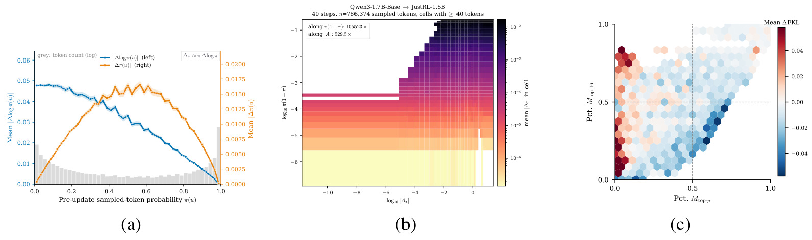
Figure 2 左格按更新前的学生采样概率分箱，双纵轴分别读对数概率绝对变化和概率绝对变化，灰色对应 token 数。概率很低处，对数变化视觉上较大而绝对质量变化仍小，随着概率远离边界，橙色的绝对变化出现峰值。中格横轴为优势绝对值的对数，纵轴为学生概率乘补概率项的对数，色格表示对应分箱的平均绝对质量变化。图内标明单元格须有最低样本数，边缘空白不能读作零变化。在优势相近的一列里，沿纵向概率几何仍可看到明暗变化。这是在真实模型里量到的关联，与单状态理论的质量缩放相容，但它没有在所有分箱消去优化器、样本和词频的混杂。右格按教师 top-p 与 top-16 的学生覆盖分位数共同分箱，蓝色代表固定前缀上的正向散度下降，红色代表上升。左边低 top-p 覆盖较容易出现红区，即便纵向的 top-16 覆盖分位较高也不能抵销。坐标的分位数属于排序位置，不能读成实际 token 覆盖百分比。
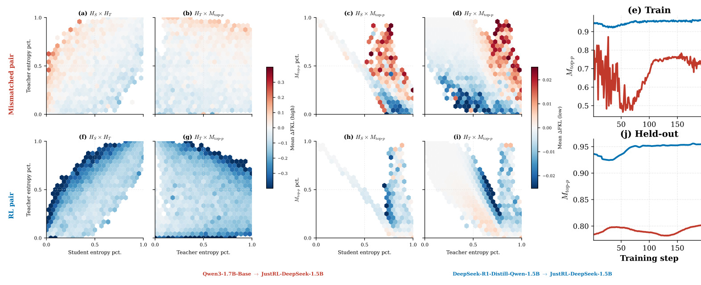
Figure 3 两行沿用同一个 JustRL 教师。上行学生为 Qwen3-1.7B-Base，下行为教师同一谱系的 DeepSeek-R1-Distill-Qwen-1.5B。四个左侧分面按初始 FKL 高低选择固定前缀，再用学生熵、教师熵或覆盖作条件。阅读时要先看各列组使用的色条：高失配列的正负散度变化范围与低失配列不同，相同深浅不意味着相同振幅。上行在初始失配大且学生熵低的部分出现明显退化，低覆盖时即使散度下降，也未必相对初始距离够大；下行多数分组更容易受益。最右列展示同一覆盖指标在训练与留出两种状态来源的变化，同谱系学生维持较高水平。曲线之间存在初始间隔，并不需要训练后才出现。这里更贴切的理解是较近的起点能帮助模型吸收这一教师的更新。因两个学生在原训练数据、架构配置和经历上并未随机配对，不能把全部差距归因于一个 SFT 动作或单一熵值。它的价值是把失败集中在哪些前缀与总体曲线一起展示出来。
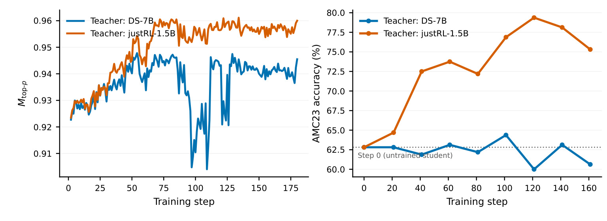
Figure 4 固定 R1-Distill-1.5B 学生，蓝色给 DeepSeek-Distill-Qwen-7B 教师，橙色给 JustRL-1.5B 教师。左边纵轴是学生在教师 top-p 集合上的质量，右边纵轴是 AMC23 准确率，虚线给未训练学生水平。小教师的覆盖较快维持在较高区域，AMC23 继续提高。较大教师的覆盖曲线中间有明显下探，准确率大多围绕初始水平波动。两个教师各自定义高概率支持，因此同一覆盖值不代表支持内的 token 相同。结论限于这一学生和这两个教师，比较还带着训练方式、数据风格和同谱系程度的变化。教师参数量大本身不能提前说明哪条轨迹蒸馏更有效。一个实用的补充检验是在启用新教师前，用固定前缀查集合宽度、中途切换格式、学生的终止概率与小规模 rollout，而不能只用教师基准测试的平均分做替代。图的横轴尺度是训练步，无法据此换算为同步或异步系统的可用吞吐。两个面板的训练范围也略不同，左边覆盖横轴延伸至更后的训练阶段，右边测试点按更稀的步间隔采样。若想复核覆盖上升是不是成绩上升的前兆，需要按共同检查点和同一固定前缀另配这两条时间序列。
3.2 跨位置干扰与终止对照
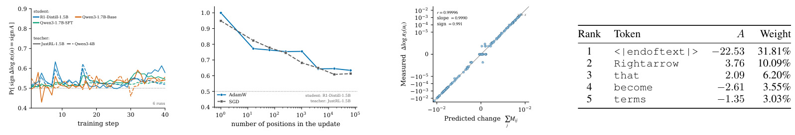
Figure 5 四个分面分别问实际更新是否和自己优势同号、增加批内位置时是否改变符号、共享参数分解是否预测实际单步变化、以及哪些发送位置影响较大。左格横轴为训练步，多组师生在长批时通常只有约一半位置同号。第二格把参与更新的位置数以对数轴展开，单位置时在接近一的位置，纳入大量位置后明显下降；图例分别给 SGD 与 AdamW。第三格只用于单步 SGD，对角线附近的散点和约零点九九九九六的相关系数支持一阶预测在该步骤的精度，不能外推为长程准确率决定系数。右格显示一个选定批次里绝对跨位置影响排序最高的五项，学生终止 token 的即时优势约 −22.53，影响权重 31.81%。分母仅是所选两百个位置中各发送位置绝对影响总和，权重不可理解为整个训练作业的梯度占比。它真正支持的是少量结构性失配位置可以在批次里影响很多其他位置，尤其要留意输出边界符号是否共用。
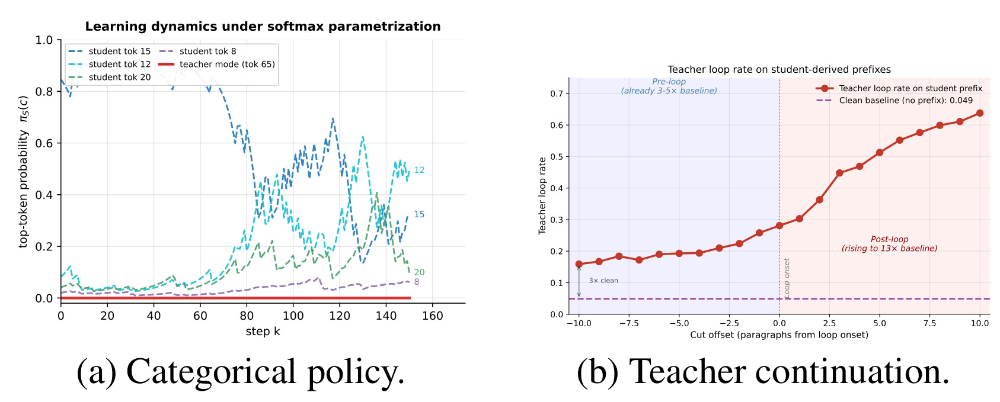
Figure 6 左图在仅有一个状态的分类策略上重复采样更新，几条学生原首选的概率此消彼长，红色标注的教师选项仍长时间贴近零。从旧模态抽走质量和把质量补给教师优选是两件事。右图显式把学生生成的前缀从首次重复段前后切开，交由同教师继续完成，横轴表示距离首次循环起点的段落偏移，纵轴是有至少五个连续 token 重复出现至少两次的序列比例。虚线的无前缀循环率是 0.049。续写来自循环前的学生历史时循环已提高，循环后随切点继续后移，最右接近基线的十三倍。切点实验说明教师自身在学生访问分布里可能变得不可靠，并未单独比较不同教师在典型测试集上的总体强弱。左图的 categorical 仿真与右图的序列续写不是一条连续实训曲线。二者共同支持一个有限机制：降低学生已有选择的概率不保证把学生带回教师能持续提供正确建议的状态。
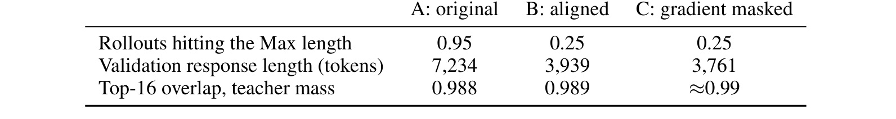
Table 5 三列依次是原始 teacher/student 终止失配、计算优势时把学生终止映射到教师的标记、仍保留失配但掩掉该学生采样位置的梯度。原始配置使用学生的 endoftext 与教师的 im_end 作各自终止标记。两种受控干预把撞最大长度的 rollout 比例从 0.95 都降至 0.25，验证响应长度从 7,234 降到 3,939 与 3,761 个 token，教师在 top-16 重合部分的质量仍约 0.99，三组之间相差很小。这为结构性终止错配影响轨迹提供比单条相关曲线更强的证据，也显示同样很高的 overlap 不能分出正常和退化状态。表的三个统计端点分别是训练 rollout、验证长度和重合区教师质量，分母口径不可混。同附录把普通词的教师日志概率人为压到 −10，学生大多用其他词表达，平均成绩 16.9–18.3 对未注入的 18.5，未出现同类系统性崩塌。此处结论依赖这个 Qwen 组合、两百步和 DAPO，不能把任何 tokenizer 不同或普通措辞受罚都判作崩塌必然原因。这两个干预的共同点是切断终止错配对有效梯度的惩罚，但改变的路径不同。映射保留了某种教师监督，遮罩相当于在该位置不期待纠正。要检验它们是否同样保留回答正确性，仍应查看主任务分数与答案终止原因。
3.3 数学推理与代码生成
数学在 DAPO 做 OPD，评估 AMC23 与 AIME24、25、26。基座学生组使用 Qwen3-8B 非思考教师；同尺寸共用 SFT 初始化的组使用其思考模式，SFT 从 OpenThoughts3-1.2M 取五万个不同提示的四十万条问答配对。这里不同模式之间同时改变两项，不能把表上下差直接估为初始化独立效果。代码使用 CodeR1-12k，并以 HumanEval+、MBPP+ 与 LiveCodeBench v6 测试。
符号解释：$N$ 为题数，$c_i$ 为每道题已生成的八个答案中正确的数量。平均指标相当于把每道题八次生成的正确比例取平均。后一项从每道题那八条生成有放回抽八次，再计算至少一次正确的概率，式子给条件期望。它与在最初的八条答案里只要出现过正确便计一不同。论文用百分比报告，差值使用百分点。生成分布变窄时，有的问题正确答案占比可能上升，另一些问题却失去偶发正确答案，所以两个端点可能给出相反判断。
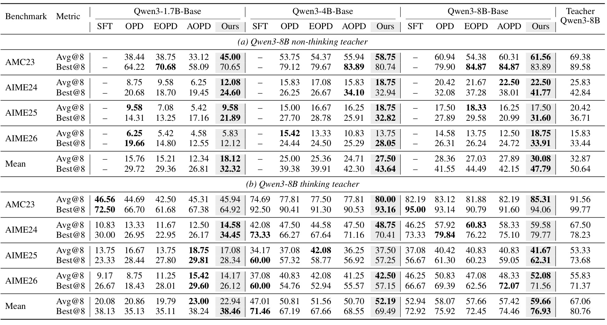
Table 1 横向先分学生 1.7B、4B、8B，再用 SFT 起点、采样 OPD、按教师熵切换的 EOPD、按采样优势切换的 AOPD 及本方法分列，最右另有教师。上半面板的基座组，路由法相对采样 OPD 的平均 Avg@8 增量为 2.36、2.50、1.72 个百分点，Best@8 为 2.60、4.26、6.24。绝对值方面，1.7B 的 Avg@8 为 15.76 到 18.12，4B 为 25.00 到 27.50，8B 为 28.36 到 30.08，最终一列 32.87 是教师。相邻 EOPD 的 27.03 对应另一基线。1.7B 的 AIME26 Avg@8 从 6.25 到 5.83，说明总体最佳仍可包含子任务回落。下半面板的共同 SFT 组，三规模 Avg@8 相对采样 OPD 增加 2.08、1.38、1.59 点，Best@8 增加 3.33、2.30、1.01。1.7B 平均 Avg@8 为 22.94，AOPD 是 23.00。4B 的 SFT 单独 Best@8 为 71.46，作者方法为 69.49，平均 Avg@8 却由 47.01 升为 52.19。结果支持与所测 OPD 对照的稳定提升，不能保证超过起点的每个端点。Avg@8 和 Best@8 的差异是保留多个可行解相对于集中已掌握解法的一个观察窗口，不能仅凭表推断具体解法类别减少了多少。上下两个面板的最右一列属于所用教师，读者可以用它定位两种教师模式的绝对差距，却不能视为学生在同一评估解码设置下可达到的理论上界。比较方法时应先固定列头的学生规模，再从该组同一任务下选采样逆向对照。譬如基座的八十亿档中，作者方法平均首个指标提高，但教师仍在另一水位，短连续训练没有闭合全部差距。最末平均行在各测试口径上作汇总，AMC 与 AIME 题数不同，若部署混合流量要求以每条请求计权，就要依据题量或业务配重重新汇总。面板注明的三项路由阈值没有对每个子测试单独调整，因此某一项变差值得保留，可以帮助识别数学写法、难度或答案长度中会被分桶掩盖的失败。平均和多次成功两个指标都有独立分母。没有原查询的八条生成，无法追加配对区间，也无法检验难题受益是不是集中在少数已高准确率样本上。把这些字段同终止率一起交付，可以判断扩大部署受益的是能常态完成的样本，还是原来偶尔正确的多样输出。
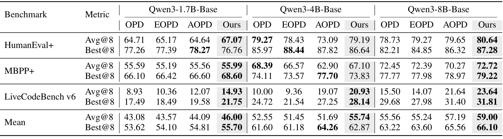
Table 2 全部方法使用第两百步的检查点，列按同一非思考教师和三个学生规模组织，行为三个代码开源测试及均值。1.7B、4B、8B 的 Avg@8 由 43.08、52.55、55.56 提高到 46.00、55.74、59.00。Best@8 的均值走向则不同：1.7B 从 53.62 到 55.70，4B 从 61.60 到 62.87 但低于 AOPD 的 64.26，8B 从 63.22 到 66.10。逐任务看，4B 在 HumanEval+ 的 Avg@8 79.19 略低于采样 OPD 的 79.27，在 MBPP+ 也由 68.39 降至 67.10，LiveCodeBench v6 却由 10.00 提高到 20.93。1.7B 的 HumanEval+ Best@8 为 76.76，低于采样 OPD 的 77.26，尽管同任务平均正确率 67.07 高于 64.71。表内没有统计区间，小数点后很小的差异无法用它单独判定跨种子的稳定优势。代码指标评估的是测试执行通过情况，所用答案模板和上下文与数学并不相同。要把这套方法用于真实编码助手，需进一步分别测短函数、仓库级修改和长工具链中终止的形态，以及生成长度与测试执行耗时。逐题候选的正确数量也决定了两种指标如何变化。若训练把原来八个候选中有个别正确的大量题压到全错，又让部分高频题全对，总的正确答案占比可能提高而至少一次命中不能同比提高。路由在两个小档的子任务里已有方向分离，评估中适合把语法报错、执行超时、可运行但答案错误以及预期输出未结束分开统计。LiveCodeBench 行的改善同样不能推导出模型在任意环境中执行工具都更好，它只测所选任务配方。基于相同步数展示的表格未说明哪条作业达到同一端点更早或耗能更低，因而若服务要求达到一个固定质量门槛，需要在过程中定期保存检查点再去算成本。对不同规模比较也要核验教师是否始终同尺寸并共享相同生成预算，避免把更长的采样或更高的环境通过率混成路由算法单独效果。若想迁移到推荐理由或规则生成，可补与给定读取范围、输出约束和外部资源接口匹配的任务，再确定这里的代码增量与实际服务的关系。
3.4 训练稳定性、门槛与算力
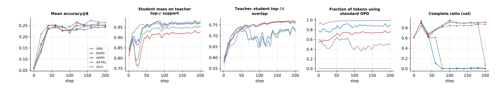
Figure 7 在同一个 Qwen3-4B Base 与非思考 8B 教师设置中，把分支放在共享训练步横轴，五格依次为平均准确率、学生覆盖、师生 top-16 重叠、使用标准采样 OPD 的 token 比例和验证完成比例。图例还包括在所有位置做 top-K FKL 的方式。常规 OPD 和 EOPD 的重叠没有立刻明显变差，部分训练区间里完成率却快速坠落。路由方式保持较高覆盖与完成，且在几种自适应方法里保留较多采样 OPD 位置。用全位置正向项也没有给出更好的总体表现，图中后段完成变化应结合该单配置理解。左格的准确率导向模型能不能解题，右格完成率指不触发长度或终止失败等的验证条件，不能把完成曲线的差直接加到正确率。工程上同一训练步应观察覆盖、完成、有效长度和答案结果，尤其注意覆盖始终高但业务生成已经重复的局部区域。曲线上的共享整数步不是等 GPU 时间，因为每步阶段比例随路由方式改变。如果只把最高点截出来，还会漏掉完成率何时崩掉以及恢复有没有发生。这里更接近对某个训练协议作连续失效观察，终点是否保持在高位和早期能否短暂恢复都值得单记。
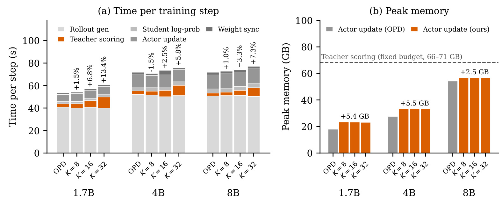
Figure 16 左图为 1.7B、4B、8B 各自的采样基线和 K 为八、十六、三十二的阶段柱，比较 rollout、教师评分、学生 logprob、actor 更新和同步。随 K 扩大，教师评分承担更多开销。K=16 时教师约 2.6–3.1 秒增到 4.5–5.9 秒每步，在整步仅占约 6–10%，端到端训练步相对采样 OPD 增加 6.8%、2.5%、3.3%。K=32 对应三个规模的开销达到 13.4%、5.8%、7.3%，因此一个固定步时间结论不能直接替另一个 K 使用。右图专看 actor 更新局部峰值，各规模增加 5.4 GB、5.5 GB、2.5 GB，虚线教师评分固定显存预算为 66–71 GB，更高于该配置的 actor 峰值，所以作者报告整步峰值未上移。它没有证明换成不同 GPU 分工、分布式教师传输或更长 rollout 时仍相同。两根轴分别是秒和显存，不应拿某一阶段的小百分比当作吞吐、能耗或网络字节的统一比例。该图也没有计入为了某目标准确率多训练多少检查点或更少重新开跑的成本。该开销口径还有系统侧可迁移条件。哪怕只有小部分 token 最终走正向，也需要在挑选之前知道每个位置的教师高分信息，因此比例小不必然让统计通信按对应比例缩减。若采用教师先分数全量回传、再学生端路由，返回记录长度受响应 token 数、教师支持集大小及数值精度决定；若路由搬到教师侧，还需要让教师看到学生的概率信号才能算覆盖和低估票。跨机器传输、缓存命中、执行重叠和资源争抢都没有由这张柱图隔离测出。图内教师显存是固定预算线，也不表示实际激活平均使用等于该预算。对端到端复现可用相同轨迹记录分别测生成、评分和学生更新，再在完整同步作业中重新启用流水线，核对局部延迟被隐藏的比例。学生输出拉长时，会同时增加教师评分 token、训练更新位置和 rollout 延迟，平均秒数会随质量路径一起变。是否因稳定性更好而减少开销，需要用相同收敛门槛累计所有实际执行时间，而不是只用这里的单步权重。
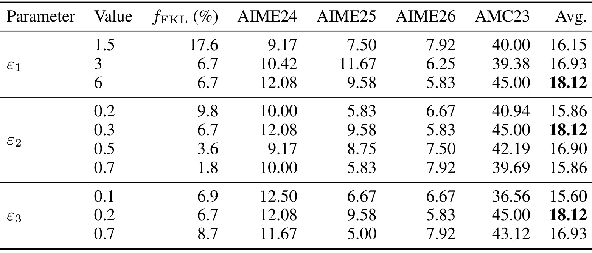
Table 8 保持另外两个阈值和 top-p 不变，每段只改左列所示的一个门槛。第二个数值列是最后训练步的有效响应位置中分流正向的比例，而各任务测值来自该两百步运行的最佳验证检查点。二者甚至不是同一时间快照，因此不应对每个单次选择动作作因果解释。调整严重低估倍数从 1.5 到 6 时，分流比例 17.6% 到 6.7%，平均 Avg@8 由 16.15 到 18.12。换一个门槛，将投票质量阈值从 0.3 提到 0.5，分流还可降为 3.6%，平均却退到 16.90，AMC23 从 45.00 到 42.19。学生覆盖门槛 0.2 在三个试过的值中平均最优，也没有逐测试全面领先。表给的是这个 1.7B Base 和 8B 教师条件下的离散敏感性，固定其他参数阻止部分混杂，并无证据把任一门槛当配置默认后就适用于其他语言、词表、温度与训练数据。运行监控可将终止先验与低估票列同时保存，在同批前缀看分流对象和效用。提高覆盖阈值会让更多状态满足至少一个条件，但只看最终统计不足以判断送入正向的前缀是否恰好是相同的那些。联合记录选择集合和有效可纠错实例比只跟踪比例更容易定位误触发。
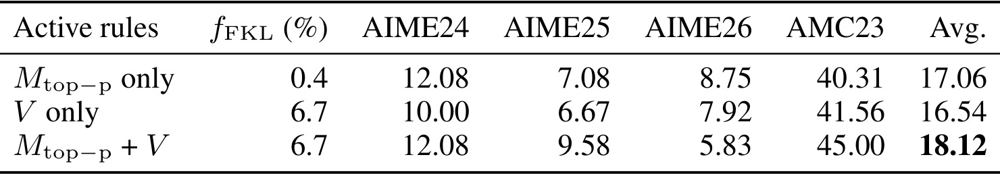
Table 10 同一实验组中，单用覆盖、单用投票以及组合的正向比例分别为 0.4%、6.7%、6.7%，平均 Avg@8 分别 17.06、16.54、18.12。投票和组合即便在一位小数上报告的用量相同，也可能选了不同位置、早点的训练策略不相同，或者最终比例被四舍五入；用量这个均值不足以说明两者机制相同。单用覆盖在 AIME26 的 8.75 高过组合的 5.83，组合在 AMC23 的 45.00 高于两条单项，更支撑按任务看效果。紧邻的 Table 9 另外对比诊断集合，将阈值 0.90 的 top-p 换成 0.95 或固定 top-K，均值从 18.12 降到 16.90 或 16.12，三个比例接近，观察到条件选取的重要性。那是诊断集合的比较，计算正向损失仍使用 top-K，不能由此说任意 K slicing 都劣于整词表。综合三组消融，可以提出优先调路由对象而非单纯调比例的假设。落地前应把候选、实际分流与各自任务的指标对齐到同一个检查点，避免把最终百分比为同的方案解释成实际训练信号完全等价。例如两个配置最后都仍有少量相同的正向位置时，组合有机会额外选到终止附近却跳过无收益的词项。原表没有公布逐位置交集，不能把这一设想当成已经观测到的效果来源。
4. 总结
4.1 结论与证据边界
这篇论文的主要工作是把在策略蒸馏里看似老师强、学生仍退化的问题分成可观察的环节。学生单次采样只比较已抽中动作的概率，未能识别教师在其他坐标的集中质量；共享参数会让恰在少数位置发生的强扰动影响同批其他 token；新的学生随后生成新的前缀，把问题带到教师也容易错的状态。终止标记对齐和单独屏蔽梯度的两个控制支持其中一条具体链路。以它为依据在少数重要位置启用更贵的正向教师监督，比只看到平均覆盖恶化就把所有位置替换成正向项更有实测依据。
- 一阶单状态命题立于较小 SGD 步和独立 logit，不能用来预测整个 AdamW 训练跑的真实幅度。共享参数分解在一个模型、样本和步长条件下的近似很好，关键发送位置的排名仍随数据和训练状态改变。
- 数学主表上半面板同时更换初始化与教师模式后才得到下半的设置，实际训后变化应在面板内比较。四十万 SFT 对并没有通过这一表被证明是最优数量，模型生态和温度也限制外推。
- EOS 映射在一个已明确的协议失配里降低截断，普通 token 注入的对照说明不是所有大负优势都足以造成同类退化。若生成协议允许其他正确结束节点，更不能对齐某个 token 后宣布完成率质量全都解决。
- 论文的多样性信号来自八条采样及有放回估计，4B 的共同 SFT 在平均和多次命中的方向不一致。没有提供每条解法的结构分类，因此不能进一步量化哪类推理解丢失得最多。
- 成本实验里 rollout 占主要时间，教师占整步较小部分，且固定 vLLM 教师预算控制了峰值。横向扩到跨集群教师服务或已有 rollout 加速链路前，要重测实际教师 RPC、每位置 logprob 字节和重试成本。
4.2 复现与迁移观察
- 先做同小模型的协议控制，固定 tokenizer、提示、样本和结束定义，仅改优势计算里的映射、或只遮罩失配位置。一起报告候选长度、完成、截断、top-p 支持覆盖、终止概率以及教师续写质量。这样能区分覆盖机制和简单缩短输出的副作用。
- 若要验证正向路由的独立实际价值，保留常规即时逆 KL、全位置近似正向、按熵、按优势及组合判据，在相同提示与训练样本预算上记录最终质量。每种方式需核验教师实际可用的支持坐标和时间分布，固定目标成绩后再算总资源。如果教师 API 只能请求有限 top logprobs，还应确认投票所需的 top-p 集合可恢复性和估计偏差。
- 面向语义 ID 分类或候选序列，把合法动作和终止的保障纳入对照。优先按历史有无覆盖、热门与冷启动分支、尾端是否可合法结束做切片。沿同一次更新记录教师概率、学生实际样本、次批候选结构和最终召回，核验平均高重合是否遮住短而关键的终止错误。论文给出的是机制参照，业务效果还需自己的同窗证据。